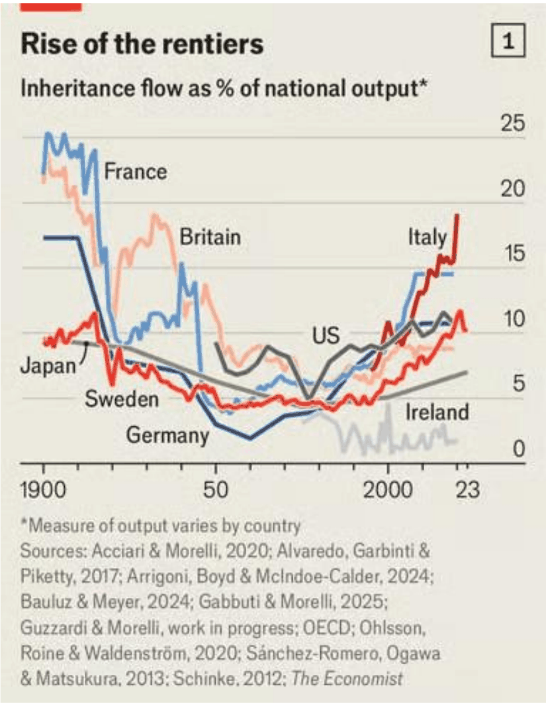

10. fejezet · diák: 166–175
Munkamorál és értékrend
A Nyugat sikerének utolsó versengő magyarázata a munkamorál: a szorgalom és a takarékosság (1. fejezet). De a gazdag országok azért gazdagok, mert szorgalmasabbak – vagy azért szorgalmasak, mert gazdagok? Ebben a fejezetben minden állítás vitatott, ezért különösen figyelj az ellenérvekre.
Nyitó eset: a bőség képzete; összefügg-e értékrend és fejlődés? 166–168. dia
Napjaink társadalmának alapja az a képzet, hogy a bőség elérhető, ha keményen megdolgozunk érte. Ez annyira mélyen kódolt a gondolkodásunkba, hogy ösztönösen azt feltételezzük: biztosan mindig így volt.
Marshall Sahlins 1972-es könyve (Stone Age Economics) teljesen más nézőpontot ajánl. Szerinte az olyan alapvető képzetek, mint a fojtogató szűkösség vagy a szegénység, a piaci alapú gazdaság „feltalálásához” kötődnek. Előtte, a távoli kőkorban (amelyről persze nagyon kevés kézzelfogható leletünk van) a gazdaság alapja a háztartás volt, a vezérelv pedig az önfenntartás, nem a többlet előállítása. Sahlins azt állítja, hogy az emberek akkoriban legfeljebb napi 2–5 órát dolgoztak, és sokkal több szabadidejük volt, mint akár ma.
Sahlins szerint a társadalom alapvető berendezkedésétől függ, mi a sikeres alkalmazkodási stratégia egy közösségben, és milyen értékeket tisztel a többség. A szorgalom tehát nem „örök emberi érték”, hanem egy adott gazdasági rendhez illeszkedő norma.
Ez egybevág a 3. fejezet modelljével: a vadászó-gyűjtögetők a hatékonyabb technikát szabadidőre váltották, nem többletre. Sahlins ezt az „eredeti jóléti társadalom” (original affluent society) kifejezéssel írta le.
A fejezet kérdése: az értékrend – szorgalom, takarékosság, bizalom – okozza a fejlődést, vagy a fejlődés alakítja az értékrendet?
Útiterv
Összefügg-e az értékrend és a fejlődés?
- Az európai megfigyelők nagyon lesújtóan nyilatkoztak az Európán kívüliek munkamoráljáról – például a latin-amerikai „mañana-hatásról” (majd holnap…).
- A kulturális különbségeket mérni is próbálják: Ronald Inglehart, Geert Hofstede, a World Values Survey (Értékek Világfelmérése).
- Az empirikus tesztek kapcsolatot mutatnak a fejlettség és bizonyos kulturális sajátosságok között.
A kapcsolat (korreláció) nem jelent ok-okozatot! Hogy a gazdag országokban magasabb a bizalom vagy más az értékrend, abból nem következik, hogy ez okozta a gazdagságot – lehet fordítva is. Erről szól a fejezet harmadik szakasza.
Hofstede kulturális dimenziói például a hatalmi távolság, az individualizmus, a bizonytalanságkerülés és a hosszú távú orientáció. Inglehart a World Values Survey alapján két tengelyen helyezi el az országokat: hagyományos vagy szekuláris-racionális, illetve túlélési vagy önkifejezési értékek.
✏️ Gondold végig – A bőség képzete
- Mit állít Sahlins a kőkori emberek munkájáról, és mi következik ebből a munkamorálra?
Mintaválasz
Hogy a háztartásra és önfenntartásra épülő kőkori gazdaságban napi 2–5 órát dolgoztak, és sok szabadidejük volt; a szűkösség képzete a piacgazdasághoz kötődik. Ebből az következik, hogy a szorgalom nem örök érték, hanem a társadalom berendezkedésétől függő alkalmazkodási stratégia.
- Miért kell óvatosan kezelni, hogy a gazdag országokban mások a kulturális értékek?
Mintaválasz
Mert a kapcsolat iránya bizonytalan: lehet, hogy a fejlődés alakította az értékeket, nem az értékek a fejlődést. Ráadásul a kulturális magyarázatok könnyen sztereotípiává válnak.
Weber hírhedt hipotézise: a protestáns etika 169–170. dia
A kultúra és a gazdaság kapcsolatának legismertebb – és legvitatottabb – elmélete Max Weber nevéhez fűződik: A protestáns etika és a kapitalizmus szelleme (1905).
Weber gondolatmenete:
- A vallások általában a világi dolgokról való lemondáshoz kapcsolják a szentséget (elvonulás, aszkézis).
- A protestánsok viszont az igyekvést és a takarékosságot kapcsolták össze a vallásossággal: a fáradhatatlan munka a legbiztosabb jele annak, hogy valaki a kiválasztottak közé tartozik.
- Ez felszabadítja a vagyonszerzést a hagyományos etika korlátai alól – sőt, a vagyonszerzést egyenesen isten akaratának tekinti.
- Ezzel párhuzamosan a munkások is szorgalmasak, hiszen az igyekvést ők is értéknek tekintik.
protestáns hit → a munka és a takarékosság vallási érték → vagyonszerzés és felhalmozás → beruházás → kapitalizmus
Miért „hírhedt”? (Kiegészítés) A hipotézist sokan bírálták: a kapitalizmus már a reformáció előtt virágzott a katolikus Itáliában és Flandriában; és a protestáns országok sikerét más tényezők (pl. a protestánsok magasabb írni-olvasni tudása, mert maguk olvasták a Bibliát) is magyarázhatják. A tétel ma is vitatott, nem cáfolt és nem igazolt tény.
Vallás és üzlet
A vallások sokféleképpen viszonyultak a gazdasághoz:
- vagyonszerzés és kapzsiság – sok vallás bűnnek tartotta a gazdagság hajszolását;
- kamat és uzsora – a középkori kereszténység és az iszlám is tiltotta vagy korlátozta a kamatszedést;
- a próféta leszármazottai, a sayyidok – számukat ma 10 millióra becsülik. Az Oszmán Birodalomban adókedvezmény járt nekik, így Anatóliában szinte minden tehetős ember sayyid lett.
A sayyid-példa tanulsága: nem (csak) a vallás alakítja a gazdasági viselkedést, hanem az ösztönzők is alakítják a vallási identitást. Ha adókedvezmény jár érte, hirtelen sok mindenki „rájön”, hogy a próféta leszármazottja.
✏️ Gondold végig – Weber
- Foglald össze Weber oksági láncát!
Mintaválasz
A protestánsok a szorgalmat és a takarékosságot vallási értékké tették (a kiválasztottság jele) → a vagyonszerzés erkölcsileg elfogadottá, sőt isten akaratává vált → a vállalkozók felhalmoztak és befektettek, a munkások szorgalmasan dolgoztak → ez segítette a kapitalizmus kialakulását.
- Mit mutat a sayyid-példa a vallás és a gazdaság kapcsolatáról?
Mintaválasz
Hogy az ok-okozati kapcsolat fordított is lehet: a gazdasági ösztönző (adókedvezmény) formálta a vallási identitást. Ez óvatosságra int a Weber-féle „kultúra → gazdaság” magyarázatokkal szemben.
Társadalmi tőke, bizalom – és mi függ mitől? 171–172. dia
Weber gondolatát később sokan továbbfejlesztették – már nem a vallásra, hanem a bizalomra és a közösségi kapcsolatokra helyezve a hangsúlyt.
Társadalmi tőke (Putnam, 1993): az emberek kapcsolatrendszere, amely a közös ügyek gördülékeny intézését teszi lehetővé.
Állampolgári kultúra: olyan attitűdök, amelyek az aktív közösségi részvételt ösztönzik: szervezetekben való részvétel, politikai egyenlőség, szolidaritás, a személyek közötti bizalom és a tolerancia.
A bizalom két típusa (Fukuyama, 1995):
- családon belüli (vérségi) kapcsolatokra épülő bizalom;
- társadalmon belüli (horizontális) kapcsolatokra épülő bizalom – idegenek között is.
magas horizontális bizalom → idegenek is olcsón együttműködnek (kevesebb szerződés, ellenőrzés, per) → alacsonyabb tranzakciós költség → nagyobb vállalatok, mélyebb piac
Ahol csak a családban lehet bízni, ott a vállalkozások is családiak és kicsik maradnak.
Putnam Észak- és Dél-Olaszországot hasonlította össze: ugyanazokat a regionális intézményeket vezették be mindenhol, mégis északon sokkal jobban működtek – Putnam szerint a középkori városállamok óta öröklődő, sűrűbb civil kapcsolatok miatt.
Mi függ mitől?
Próbáld kitalálni, melyik ország lakóiról szólhatnak ezek a beszámolók:
- Sidney Gulick: „lusta és az idő múlásával szemben teljesen érdektelen emberek benyomását keltik”;
- Beatrice Webb: „A szabadidőről való felfogásuk igencsak megkérdőjelezhető, a személyi függetlenséggel kapcsolatos nézetük pedig elfogadhatatlan”;
- „amikor munka közben figyeltem meg a munkásaikat, az a benyomásom alakult ki, hogy nagyon elégedett, felszabadult emberek, akiket nem zavarnak az időbeli korlátok”;
- és egy bónusz – Mary Shelley: „a németek soha nem sietnek”.
A megoldás
Ha-Joon Chang (Rossz szamaritánusok) szerint az első három idézet a 20. század eleji Japánról szól, Mary Shelley pedig a 19. század eleji németekről írt. Vagyis éppen azokról a népekről, amelyeket ma a szorgalom és a pontosság mintapéldájának tartunk.
Ha-Joon Chang: nem a fejlettség függ a kultúrától, hanem éppen fordítva – a fejlettség (és bizonyos összetevői, pl. a teljesítményre ösztönző intézmények) befolyásolja a kultúrát és a munkamorált.
Erre utal az Acemoglu által elemzett Nogales: a város egyik fele Arizonában (USA), a másik Sonorában (Mexikó) van – ugyanaz a kultúra, ugyanaz a földrajz, mégis az arizonai fele sokkal gazdagabb. Ugyanígy Észak- és Dél-Korea, vagy Kelet- és Nyugat-Németország: azonos kultúra, eltérő intézmények, eltérő pálya.
A mintazh 10. kérdése épp erről szól: a munkamorál és a fejlődés kapcsolatát azért kell óvatosan értelmezni, mert a fejlődés maga is alakíthatja a normákat és az értékeket.
✏️ Gondold végig – Mi függ mitől?
- Miért segíti a gazdaságot a horizontális bizalom?
Mintaválasz
Mert lehetővé teszi, hogy idegenek is olcsón együttműködjenek: kevesebb ellenőrzés, szerződés és pereskedés kell. Ez csökkenti a tranzakciós költségeket, és lehetővé teszi a nagy, nem családi alapú vállalatokat és a mélyebb piacokat.
- Mit bizonyít a két Nogales vagy a két Korea esete a kultúra–fejlődés vitában?
Mintaválasz
Hogy azonos kultúra mellett az intézmények eltérő pályára vihetik a társadalmakat. Ha a kultúra lenne a döntő, a két fél hasonlóan fejlődne. Ez Chang állítását támasztja alá: a fejlettség és az intézmények alakítják a kultúrát, nem fordítva.
- Miért tanulságosak a japánokról és németekről szóló régi beszámolók?
Mintaválasz
Mert a „lustának” tartott népekből később a szorgalom mintaképei lettek – vagyis a munkamorál a fejlődéssel együtt változott. Ez óv a sztereotípiáktól: egy nép mai munkamoráljából nem következik, hogy mindig ilyen volt vagy lesz.
A meritokrácia mint társadalomszervező elv 173–175. dia
Michael Young (disztópia, 1958): érdem (merit) = tehetség (IQ) + erőfeszítés (szorgalom).
Meritokrácia tehát az arra érdemesek által irányított, vezetett társadalom.
A meritokrácia értékrendbeli kérdés, de van intézményi kivetülése is. Érdemes visszalapozni a 4. fejezethez, és végiggondolni, miben hasonló és miben más a nyílt hozzáférésű társadalom: mindkettőben a teljesítmény és nem a születés dönt a boldogulásról.
Történelmi előzmények:
- Platón elmélete (a filozófusok kormányozzanak) és a konfuciánus vizsgarendszer Kínában (8. fejezet);
- a felvilágosodás, és az intézményrendszer megnyitása a közemberek előtt (Napóleon idején és később);
- az USA a második világháború után (vö. GI Bill, 9. fejezet).
Előny: a tehetség és a szorgalom jutalmazása teljesítményre ösztönöz, és a legalkalmasabbak kerülnek a fontos helyekre.
Hátrány: aki sikeres, azt hiheti, hogy mindent kizárólag magának köszönhet, aki pedig lemarad, azt saját hibájának tulajdonítják. A meritokrácia az örökölt előnyöket is teljesítményként legitimálhatja.
Young könyve (The Rise of the Meritocracy) szatíra volt: azt a jövőt írta le, ahol az új, „érdemes” elit éppolyan zárt és gőgös lesz, mint a régi arisztokrácia. Young később csalódottan látta, hogy a politikusok a szót pozitív célként kezdték használni.
A meritokrácia vége?
Az Economist ábrája azt mutatja, hogy a nemzeti jövedelemhez viszonyított örökölt vagyon áramlása Európában a 20. század elején nagyon magas volt (Franciaországban 20% fölött), a két világháború és a jóléti állam idején mélyre esett – az 1970-es évek óta viszont újra emelkedik. A „járadékosok felemelkedése” (rise of the rentiers) azt jelzi, hogy a sikerben egyre nagyobb szerepe lehet az öröklésnek a saját teljesítményhez képest.

✏️ Gondold végig – Meritokrácia
- Miben hasonlít a meritokrácia a nyílt hozzáférésű rendhez, és miben különbözik?
Mintaválasz
Hasonlóság: mindkettőben a teljesítmény, nem a születés dönt a boldogulásról, és a lehetőségek elvben mindenki előtt nyitottak. Különbség: a nyílt hozzáférésű rend a versenyre és a jogok általános védelmére épül, a meritokrácia pedig egy érdem szerint kiválasztott elit vezetésére – ami maga is bezáródhat.
- Mit jelez, hogy az örökölt vagyon aránya az 1970-es évek óta újra nő?
Mintaválasz
Hogy a vagyon egyre inkább öröklés útján száll tovább, nem teljesítményből keletkezik. Ez gyengítheti a meritokratikus ösztönzőt, és – a meritokratikus ideológia miatt – az örökölt előnyöket teljesítményként is igazolhatja.
Összefoglalás: értékrend és fejlődés – kölcsönös egymásra hatás 175. dia
- A bizalom, a normák és a munkához való viszony befolyásolhatja az együttműködés költségét.
- A gazdasági fejlődés és az intézmények maguk is alakítják az értékeket.
- A kulturális magyarázatok oksági azonosítása nehéz; könnyen sztereotípiává válhatnak.
- A meritokrácia ösztönözhet, de az örökölt előnyöket teljesítményként is legitimálhatja.
Válasz a fejezet kérdésére: a kapcsolat kétirányú. A bizalom és a szorgalom csökkentheti az együttműködés költségét, és segítheti a fejlődést (Weber, Putnam, Fukuyama). De a fejlettség és az intézmények is alakítják az értékeket (Sahlins, Chang, a két Nogales) – a ma szorgalmasnak tartott japánokat és németeket egykor lustának írták le. Ezért a kulturális magyarázatokkal óvatosan kell bánni.
Esszéhez: ha ezt látod → ezt használd
| Ha az esetben ez áll… | …akkor ezt a fogalmat / mechanizmust használd |
|---|---|
| Egy népet „lustának” vagy „szorgalmasnak” írnak le | sztereotípia-veszély; Chang: a fejlettség alakítja a kultúrát (→) |
| Azonos kultúra, eltérő fejlődési pálya (két Korea, két Nogales) | az intézmények döntenek, nem a kultúra (→, 4. fejezet) |
| Vallási értékek és vállalkozói szellem | Weber: protestáns etika (vitatott) (→) |
| Magas/alacsony bizalom, családi vállalkozások | társadalmi tőke (Putnam), a bizalom két típusa (Fukuyama) (→) |
| Egy ösztönző (pl. adókedvezmény) átalakítja az identitást | sayyid-példa: ösztönzők → értékek (→) |
| Vizsgák, tehetség szerinti kiválasztás; öröklött vagyon | meritokrácia előnyei és hátrányai (→) |
Kapcsolódások
- Munkamorál mint a Nyugat sikerének magyarázata (1. fejezet).
- Az önzés csapdája, bizalom a kereskedelemben (2. fejezet).
- Informális intézmények, normák; NWW és AR (4. fejezet).
- Kínai vizsgarendszer (8. fejezet); fogyasztói társadalom (9. fejezet).
- Szintézis – a kultúra és az intézmények szerepe a Korea-esszében (15. fejezet).